10 MLM, Longitudinal: Autism
library(tidyverse) # all things tidy
library(pander) # nice looking general tabulations
library(furniture) # nice table1() descriptive
library(texreg) # Convert Regression Output to LaTeX or HTML Tables
library(psych) # contains some useful functions, like headTail
library(performance)
library(sjstats) # ICC calculations
library(sjPlot) # Quick predictive and diagnostic plots
library(effects) # Estimated Marginal Means
library(VIM) # Visualization and Imputation of Missing Values
library(naniar) # Summaries and Visualizations for Missing Data
library(lme4) # Linear, generalized linear, & nonlinear mixed models
library(optimx)
library(interactions)
library(ggResidpanel)
library(HLMdiag) # package with the dataset10.1 Background
The source: http://www-personal.umich.edu/~kwelch/
This data was collected by researchers at the University of Michigan (Anderson et al. 2009) as part of a prospective longitudinal study of 214 children. The children were divided into three diagnostic groups (bestest2) when they were 2 years old: Autism (autism), Pervasive Developmental Disorder (pdd), and non-spectrum children (none in this sample). The study was designed to collect information on each child at approximately 2, 3, 5, 9, and 13 years of age, although not all children were measured for each age. One of the study objectives was to assess the relative influence of the initial diagnostic category, language proficiency at age 2, and other covariates on the developmental trajectories of the socialization (vsae) of these children.
Study participants were children who had had consecutive referrals to one of two autism clinics before the age of 3 years. Social development was assessed at each age using the Vineland Adaptive Behavior Interview survey form, a parent-reported measure of socialization. VSAE (Vineland Socialization Age Equivalent), was a combined score that included assessments of interpersonal relationships, play/leisure time activities, and coping skills. Initial language development was assessed using the Sequenced Inventory of Communication Development (SICD) scale; children were placed into one of three groups (sicdegp) based on their initial SICD scores on the expressive language subscale at age 2.
childidChild’s identification number for this studysicdegpSequenced Inventory of Communication Development group (an assessment of expressive language development) - a factor. Levels arelow,med, andhighage2Age (in years) centered around age 2 (age at diagnosis)vsaeVineland Socialization Age Equivalent, Parent-reported measure of socialization, including measures of:- interpersonal relationships
- play/leisure time activities
- coping skills
genderChild’s gender - a factor. Levels aremaleandfemaleraceChild’s race - a factor. Levels arewhiteandnonwhitebestest2Diagnosis at age 2 - a factor. Levels areautismandpdd(pervasive developmental disorder)
data(autism, package = "HLMdiag") # make the dataset 'active' from this packagetibble::glimpse(autism) # first look at the dataset and its varaiblesRows: 604
Columns: 7
$ childid <int> 1, 1, 1, 1, 1, 10, 10, 10, 10, 100, 100, 100, 100, 101, 101, ~
$ sicdegp <fct> high, high, high, high, high, low, low, low, low, high, high,~
$ age2 <dbl> 0, 1, 3, 7, 11, 0, 1, 7, 11, 0, 1, 3, 7, 0, 1, 7, 11, 0, 1, 3~
$ vsae <int> 6, 7, 18, 25, 27, 9, 11, 18, 39, 15, 24, 37, 135, 8, 24, 75, ~
$ gender <fct> male, male, male, male, male, male, male, male, male, male, m~
$ race <fct> white, white, white, white, white, white, white, white, white~
$ bestest2 <fct> pdd, pdd, pdd, pdd, pdd, autism, autism, autism, autism, pdd,~10.1.1 Long Format
data_long <- autism %>% # save the dataset as a new name
dplyr::mutate(childid = childid %>% factor) %>% # declare grouping var a factor
dplyr::mutate(age = 2 + age2) %>% # create the original age variable (unequally spaced)
dplyr::mutate(obs = age %>% factor %>% as.numeric) %>% # Observation Number = 1, 2, 3, 4, 5 (equally spaced)
dplyr::select(childid, # choose variables and order to keep
gender, race, bestest2, sicdegp,
obs, age, age2, vsae) %>%
dplyr::arrange(childid, age2) # sort observationsdata_long %>%
psych::headTail(top = 11, bottom = 6) childid gender race bestest2 sicdegp obs age age2 vsae
1 1 male white pdd high 1 2 0 6
2 1 male white pdd high 2 3 1 7
3 1 male white pdd high 3 5 3 18
4 1 male white pdd high 4 9 7 25
5 1 male white pdd high 5 13 11 27
6 2 male white autism low 1 2 0 6
7 2 male white autism low 2 3 1 7
8 2 male white autism low 3 5 3 7
9 2 male white autism low 4 9 7 8
10 2 male white autism low 5 13 11 14
11 3 male nonwhite pdd high 1 2 0 17
... <NA> <NA> <NA> <NA> <NA> ... ... ... ...
599 211 male nonwhite autism high 1 2 0 15
600 212 male white autism med 1 2 0 7
601 212 male white autism med 2 3 1 21
602 212 male white autism med 3 5 3 29
603 212 male white autism med 4 9 7 72
604 212 male white autism med 5 13 11 14710.1.2 Wide Format
data_wide <- data_long %>% # save the dataset as a new name
dplyr::select(-age2, -obs) %>% # delete (by deselecting) this variable
tidyr::pivot_wider(names_from = age, # repeated indicator
values_from = vsae, # variable repeated
names_prefix = "vsae_") %>% # prefix in from of the
dplyr::arrange(childid) # sort observations
tibble::glimpse(data_wide)Rows: 155
Columns: 10
$ childid <fct> 1, 2, 3, 4, 6, 8, 9, 10, 12, 13, 14, 15, 16, 17, 18, 19, 21, ~
$ gender <fct> male, male, male, male, male, male, male, male, male, male, m~
$ race <fct> white, white, nonwhite, nonwhite, white, nonwhite, white, whi~
$ bestest2 <fct> pdd, autism, pdd, autism, autism, autism, pdd, autism, autism~
$ sicdegp <fct> high, low, high, high, low, low, med, low, med, low, med, med~
$ vsae_2 <int> 6, 6, 17, 12, 6, 9, 12, 9, 7, 6, 12, 13, 7, 5, 10, 17, 11, 11~
$ vsae_3 <int> 7, 7, 18, 14, 12, 12, 21, 11, 10, 10, 19, 8, 6, 10, 6, 27, 21~
$ vsae_5 <int> 18, 7, 12, 38, NA, 14, NA, NA, 8, 12, 14, 29, NA, 29, NA, NA,~
$ vsae_9 <int> 25, 8, 18, 114, 12, NA, 66, 18, NA, NA, 28, 24, 39, 32, NA, 7~
$ vsae_13 <int> 27, 14, 24, NA, 45, NA, 68, 39, NA, NA, 68, 44, 24, 67, NA, 1~Notice the missing values, displayed as NA.
data_wide %>%
psych::headTail() childid gender race bestest2 sicdegp vsae_2 vsae_3 vsae_5 vsae_9 vsae_13
1 1 male white pdd high 6 7 18 25 27
2 2 male white autism low 6 7 7 8 14
3 3 male nonwhite pdd high 17 18 12 18 24
4 4 male nonwhite autism high 12 14 38 114 <NA>
5 <NA> <NA> <NA> <NA> <NA> ... ... ... ... ...
6 209 male white autism med 2 4 <NA> 12 32
7 210 male white autism low 4 25 <NA> 130 <NA>
8 211 male nonwhite autism high 15 <NA> <NA> <NA> <NA>
9 212 male white autism med 7 21 29 72 14710.2 Exploratory Data Analysis
10.2.1 Demographic Summary
10.2.1.1 Using the WIDE formatted dataset
Each person’s data is only stored on a single line
data_wide %>%
dplyr::group_by("Initial Language Development" = sicdegp) %>% # how split into columns
furniture::table1("Diagnosis" = bestest2,
"Gender" = gender,
"Race" = race,
digits = 2,
na.rm = FALSE,
total = TRUE,
test = TRUE, # compare the groups
output = "markdown") | Total | low | med | high | P-Value | |
|---|---|---|---|---|---|
| n = 155 | n = 49 | n = 65 | n = 41 | ||
| Diagnosis | 0.018 | ||||
| autism | 100 (64.5%) | 38 (77.6%) | 42 (64.6%) | 20 (48.8%) | |
| pdd | 55 (35.5%) | 11 (22.4%) | 23 (35.4%) | 21 (51.2%) | |
| NA | 0 (0%) | 0 (0%) | 0 (0%) | 0 (0%) | |
| Gender | 0.706 | ||||
| male | 134 (86.5%) | 44 (89.8%) | 55 (84.6%) | 35 (85.4%) | |
| female | 21 (13.5%) | 5 (10.2%) | 10 (15.4%) | 6 (14.6%) | |
| NA | 0 (0%) | 0 (0%) | 0 (0%) | 0 (0%) | |
| Race | 0.944 | ||||
| white | 101 (65.2%) | 31 (63.3%) | 43 (66.2%) | 27 (65.9%) | |
| nonwhite | 54 (34.8%) | 18 (36.7%) | 22 (33.8%) | 14 (34.1%) | |
| NA | 0 (0%) | 0 (0%) | 0 (0%) | 0 (0%) |
10.2.1.2 Using the LONG formatted dataset
Each person’s data is stored on multiple lines, one for each time point. To ensure the summary table is correct, you must choose a single time point per person.
# Note: One person is missing Age 2
data_long %>%
dplyr::filter(age == 2) %>% # restrict to one-line per person
dplyr::group_by("Initial Language Development" = sicdegp) %>% # how split into columns
furniture::table1("Diagnosis" = bestest2,
"Gender" = gender,
"Race" = race,
digits = 2,
na.rm = FALSE,
total = TRUE,
test = TRUE, # compare the groups
output = "markdown") | Total | low | med | high | P-Value | |
|---|---|---|---|---|---|
| n = 154 | n = 49 | n = 65 | n = 40 | ||
| Diagnosis | 0.025 | ||||
| autism | 100 (64.9%) | 38 (77.6%) | 42 (64.6%) | 20 (50%) | |
| pdd | 54 (35.1%) | 11 (22.4%) | 23 (35.4%) | 20 (50%) | |
| NA | 0 (0%) | 0 (0%) | 0 (0%) | 0 (0%) | |
| Gender | 0.714 | ||||
| male | 134 (87%) | 44 (89.8%) | 55 (84.6%) | 35 (87.5%) | |
| female | 20 (13%) | 5 (10.2%) | 10 (15.4%) | 5 (12.5%) | |
| NA | 0 (0%) | 0 (0%) | 0 (0%) | 0 (0%) | |
| Race | 0.95 | ||||
| white | 100 (64.9%) | 31 (63.3%) | 43 (66.2%) | 26 (65%) | |
| nonwhite | 54 (35.1%) | 18 (36.7%) | 22 (33.8%) | 14 (35%) | |
| NA | 0 (0%) | 0 (0%) | 0 (0%) | 0 (0%) |
10.2.2 Baseline Summary
10.2.2.1 Using the WIDE formatted dataset
Each person’s data is only stored on a single line
data_wide %>%
dplyr::group_by("Initial Language Development" = sicdegp) %>% # how split into columns
furniture::table1(vsae_2,
digits = 2,
na.rm = FALSE,
total = TRUE,
test = TRUE, # compare the groups
output = "markdown")| Total | low | med | high | P-Value | |
|---|---|---|---|---|---|
| n = 155 | n = 49 | n = 65 | n = 41 | ||
| vsae_2 | <.001 | ||||
| 9.16 (3.84) | 7.06 (2.73) | 8.74 (3.51) | 12.40 (3.43) |
10.2.2.2 Using the LONG formatted dataset
Each person’s data is stored on multiple lines, one for each time point. To ensure the summary table is correct, you must choose a single time point per person.
data_long %>%
dplyr::filter(age == 2) %>%
dplyr::group_by("Initial Language Development" = sicdegp) %>% # how split into columns
furniture::table1(vsae,
test = TRUE,
output = "markdown")| low | med | high | P-Value | |
|---|---|---|---|---|
| n = 49 | n = 65 | n = 40 | ||
| vsae | <.001 | |||
| 7.1 (2.7) | 8.7 (3.5) | 12.4 (3.4) |
10.2.3 Missing Data & Attrition
10.2.3.1 VIM package
Plot the amount of missing vlaues and the amount of each patter of missing values.
data_wide %>%
VIM::aggr(numbers = TRUE, # shows the number to the far right
prop = FALSE) # shows counts instead of proportions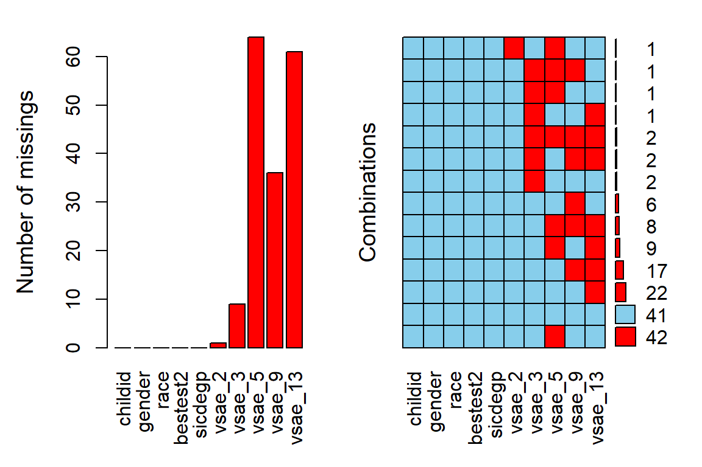
10.2.3.2 naniar package
data_wide %>%
naniar::vis_miss()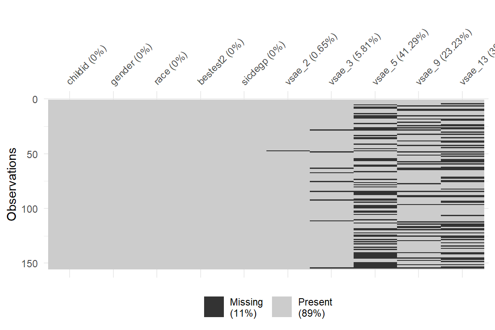
data_wide %>%
naniar::gg_miss_var()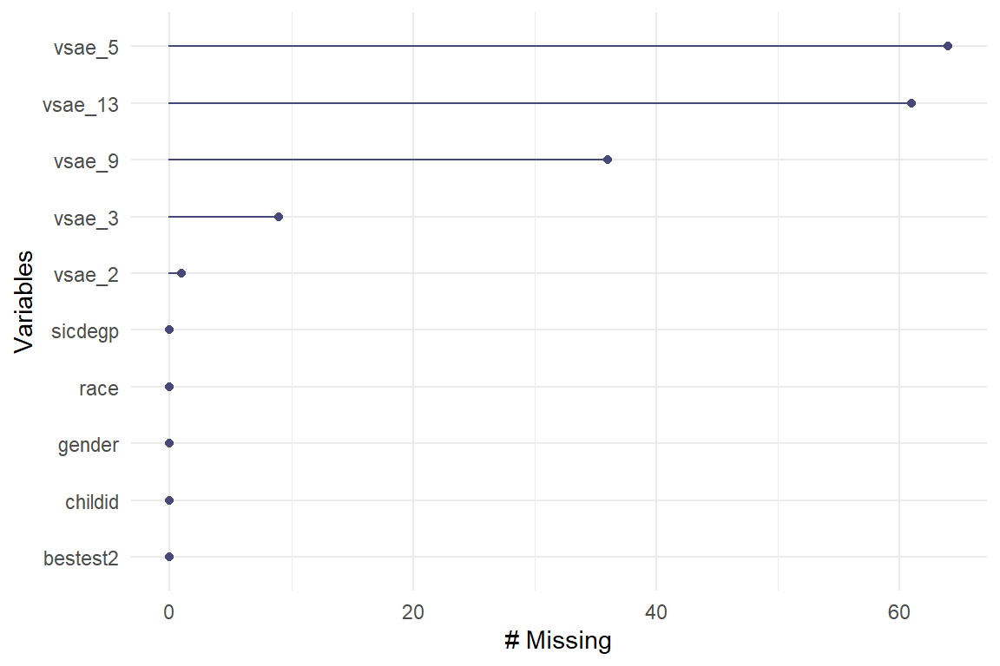
data_wide %>%
naniar::gg_miss_var(show_pct = TRUE, # x-axis is PERCENT, not count
facet = sicdegp) + # create seperate panels
theme_bw() # add ggplot layers as normal
data_wide %>%
naniar::gg_miss_upset() data_wide %>%
naniar::gg_miss_upset(sets = c("vsae_13_NA",
"vsae_9_NA",
"vsae_5_NA",
"vsae_3_NA",
"vsae_2_NA"),
keep.order = TRUE) 
10.2.4 Means Across Time
10.2.4.1 Using the WIDE formatted dataset
Default = COMPLETE CASES ONLY!!!
Note - the sample size at each time point is the same, but subjects are only included if they have data at every time point (total n = 41)
data_wide %>%
dplyr::group_by("Initial Language Development" = sicdegp) %>% # how split into columns
dplyr::select(starts_with("vsae_")) %>%
furniture::table1(digits = 2,
total = TRUE,
test = TRUE, # compare the groups
output = "markdown")| Total | low | med | high | P-Value | |
|---|---|---|---|---|---|
| n = 41 | n = 10 | n = 17 | n = 14 | ||
| vsae_2 | 0.003 | ||||
| 9.80 (4.39) | 6.60 (2.88) | 9.47 (4.12) | 12.50 (4.09) | ||
| vsae_3 | <.001 | ||||
| 14.54 (6.89) | 8.00 (2.11) | 14.29 (6.08) | 19.50 (6.15) | ||
| vsae_5 | <.001 | ||||
| 23.00 (14.84) | 12.50 (5.54) | 20.18 (8.57) | 33.93 (18.50) | ||
| vsae_9 | <.001 | ||||
| 36.68 (26.29) | 12.30 (8.07) | 34.41 (22.54) | 56.86 (23.54) | ||
| vsae_13 | 0.009 | ||||
| 57.07 (47.83) | 22.40 (24.45) | 57.82 (50.33) | 80.93 (44.38) |
Specify All data:
note - that the smaple sizes will be different for each time point (total n = 155)
data_wide %>%
dplyr::group_by("Initial Language Development" = sicdegp) %>% # how split into columns
dplyr::select(starts_with("vsae_")) %>%
furniture::table1(digits = 2,
na.rm = FALSE,
total = TRUE,
test = TRUE, # compare the groups
output = "markdown")| Total | low | med | high | P-Value | |
|---|---|---|---|---|---|
| n = 155 | n = 49 | n = 65 | n = 41 | ||
| vsae_2 | <.001 | ||||
| 9.16 (3.84) | 7.06 (2.73) | 8.74 (3.51) | 12.40 (3.43) | ||
| vsae_3 | <.001 | ||||
| 15.12 (7.81) | 12.02 (6.33) | 13.68 (5.42) | 21.24 (9.38) | ||
| vsae_5 | <.001 | ||||
| 21.48 (13.32) | 15.03 (7.92) | 17.69 (8.00) | 33.92 (15.78) | ||
| vsae_9 | <.001 | ||||
| 39.55 (32.62) | 25.56 (28.42) | 32.12 (23.40) | 64.14 (34.59) | ||
| vsae_13 | <.001 | ||||
| 59.49 (47.96) | 37.11 (35.54) | 56.17 (47.91) | 88.69 (46.34) |
10.2.4.2 Using the LONG formatted dataset
Each person’s data is stored on multiple lines, one for each time point.
FOR ALL DATA!
data_sum_all <- data_long %>%
dplyr::group_by(sicdegp, age2) %>% # specify the groups
dplyr::summarise(vsae_n = n(), # count of valid scores
vsae_mean = mean(vsae), # mean score
vsae_sd = sd(vsae), # standard deviation of scores
vsae_sem = vsae_sd / sqrt(vsae_n)) # stadard error for the mean of scores
data_sum_all# A tibble: 15 x 6
# Groups: sicdegp [3]
sicdegp age2 vsae_n vsae_mean vsae_sd vsae_sem
<fct> <dbl> <int> <dbl> <dbl> <dbl>
1 low 0 49 7.06 2.73 0.389
2 low 1 46 12.0 6.33 0.934
3 low 3 29 15.0 7.92 1.47
4 low 7 36 25.6 28.4 4.74
5 low 11 28 37.1 35.5 6.72
6 med 0 65 8.74 3.51 0.436
7 med 1 62 13.7 5.42 0.688
8 med 3 36 17.7 8.00 1.33
9 med 7 48 32.1 23.4 3.38
10 med 11 40 56.2 47.9 7.58
11 high 0 40 12.4 3.43 0.542
12 high 1 38 21.2 9.38 1.52
13 high 3 26 33.9 15.8 3.09
14 high 7 35 64.1 34.6 5.85
15 high 11 26 88.7 46.3 9.09 FOR COMPLETE CASES ONLY!!!
data_sum_cc <- data_long %>%
dplyr::group_by(childid) %>% # group-by child
dplyr::mutate(child_vsae_n = n()) %>% # count the number of valid VSAE scores
dplyr::filter(child_vsae_n == 5) %>% # restrict to only thoes children with 5 valid scores
dplyr::group_by(sicdegp, age2) %>% # specify the groups
dplyr::summarise(vsae_n = n(), # count of valid scores
vsae_mean = mean(vsae), # mean score
vsae_sd = sd(vsae), # standard deviation of scores
vsae_sem = vsae_sd / sqrt(vsae_n)) # stadard error for the mean of scores
data_sum_cc# A tibble: 15 x 6
# Groups: sicdegp [3]
sicdegp age2 vsae_n vsae_mean vsae_sd vsae_sem
<fct> <dbl> <int> <dbl> <dbl> <dbl>
1 low 0 10 6.6 2.88 0.909
2 low 1 10 8 2.11 0.667
3 low 3 10 12.5 5.54 1.75
4 low 7 10 12.3 8.07 2.55
5 low 11 10 22.4 24.4 7.73
6 med 0 17 9.47 4.12 1.00
7 med 1 17 14.3 6.08 1.47
8 med 3 17 20.2 8.57 2.08
9 med 7 17 34.4 22.5 5.47
10 med 11 17 57.8 50.3 12.2
11 high 0 14 12.5 4.09 1.09
12 high 1 14 19.5 6.15 1.64
13 high 3 14 33.9 18.5 4.94
14 high 7 14 56.9 23.5 6.29
15 high 11 14 80.9 44.4 11.9 10.2.5 Person Profile Plots
Use the data in LONG format
10.2.5.1 Unequally Spaced
data_long %>%
dplyr::mutate(sicdegp = fct_recode(sicdegp,
"Low Communication" = "low",
"Medium Communication" = "med",
"High Communication" = "high")) %>%
ggplot(aes(x = age,
y = vsae)) +
geom_point(size = 0.75) +
geom_line(aes(group = childid),
alpha = .5,
size = 1) +
facet_grid(. ~ sicdegp) +
theme_bw() +
scale_x_continuous(breaks = c(2, 3, 5, 9, 13)) +
labs(x = "Age of Child, Years",
y = "Vineland Socialization Age Equivalent",
color = "Sequenced Inventory of Communication Development") +
geom_smooth(aes(color = "Flexible"),
method = "loess",
se = FALSE,) +
geom_smooth(aes(color = "Linear"),
method = "lm",
se = FALSE) +
scale_color_manual(name = "Smoother Type: ",
values = c("Flexible" = "blue",
"Linear" = "red")) +
theme(legend.position = "bottom",
legend.key.width = unit(2, "cm"))10.2.5.2 Equally Spaced
data_long %>%
dplyr::mutate(sicdegp = fct_recode(sicdegp,
"Low Communication" = "low",
"Medium Communication" = "med",
"High Communication" = "high")) %>%
ggplot(aes(x = obs,
y = vsae)) +
geom_point(size = 0.75) +
geom_line(aes(group = childid),
alpha = .5,
size = 1) +
facet_grid(. ~ sicdegp) +
theme_bw() +
labs(x = "Observation Number",
y = "Vineland Socialization Age Equivalent",
color = "Sequenced Inventory of Communication Development") +
geom_smooth(aes(color = "Flexible"),
method = "loess",
se = FALSE,) +
geom_smooth(aes(color = "Linear"),
method = "lm",
se = FALSE) +
scale_color_manual(name = "Smoother Type: ",
values = c("Flexible" = "blue",
"Linear" = "red")) +
theme(legend.position = "bottom",
legend.key.width = unit(2, "cm"))
10.2.6 Side-by-side Boxplots
data_long %>%
ggplot(aes(x = sicdegp,
y = vsae,
fill = sicdegp)) +
geom_boxplot() +
theme_bw() +
facet_grid(. ~ age,
labeller = "label_both") +
theme(legend.position = "none") +
labs(x = "Initial Language Development\nSequenced Inventory of Communication Development (SICD) at Age 2",
y = "Parent-Reported Measure of Socialization\nVineland Socialization Age Equivalent")
10.2.7 Means Plots
10.2.7.1 Default stat_summary
It is nice that the stat_summary() layer computes the standard error for the mean for you using the data in LONG format
data_long %>%
ggplot(aes(x = age,
y = vsae,
color = sicdegp)) +
stat_summary() + # default: points at MEAN and extend vertically 1 standard error for the mean
stat_summary(fun = "mean", # plot the means
geom = "line") + # ...and connect with lines
theme_bw() +
scale_x_continuous(breaks = c(2, 3, 5, 9, 13)) 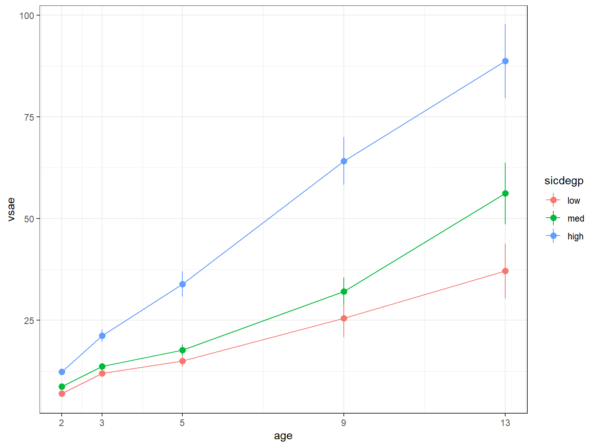
data_long %>%
ggplot(aes(x = obs,
y = vsae,
color = sicdegp)) +
stat_summary() + # default: points at MEAN and extend vertically 1 standard error for the mean
stat_summary(fun = "mean", # plot the means
geom = "line") + # ...and connect with lines
theme_bw() 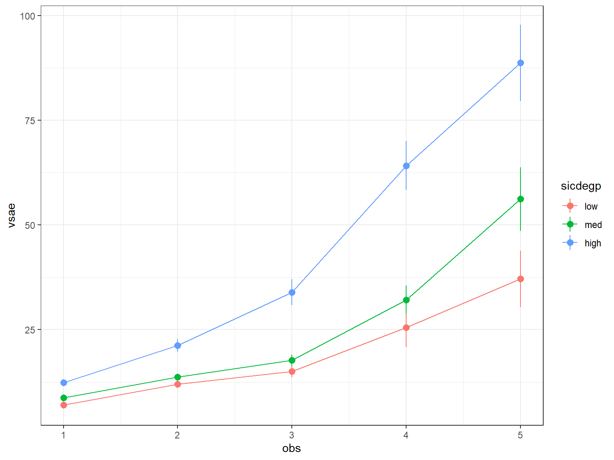
10.2.7.2 Manually Summarized
data_sum_all %>%
dplyr::mutate(age = age2 + 2) %>%
ggplot() +
aes(x = age,
y = vsae_mean,
color = sicdegp) +
geom_errorbar(aes(ymin = vsae_mean - vsae_sem, # mean +/- one SE for the mean
ymax = vsae_mean + vsae_sem),
width = .25) +
geom_point(aes(shape = sicdegp),
size = 3) +
geom_line(aes(group = sicdegp)) +
theme_bw() +
scale_x_continuous(breaks = c(2, 3, 5, 9, 13)) +
labs(x = "Age of Child, Years",
y = "Vineland Socialization Age Equivalent",
color = "Sequenced Inventory of Communication Development:",
shape = "Sequenced Inventory of Communication Development:",
linetype = "Sequenced Inventory of Communication Development:") +
theme(legend.position = "bottom",
legend.key.width = unit(2, "cm"))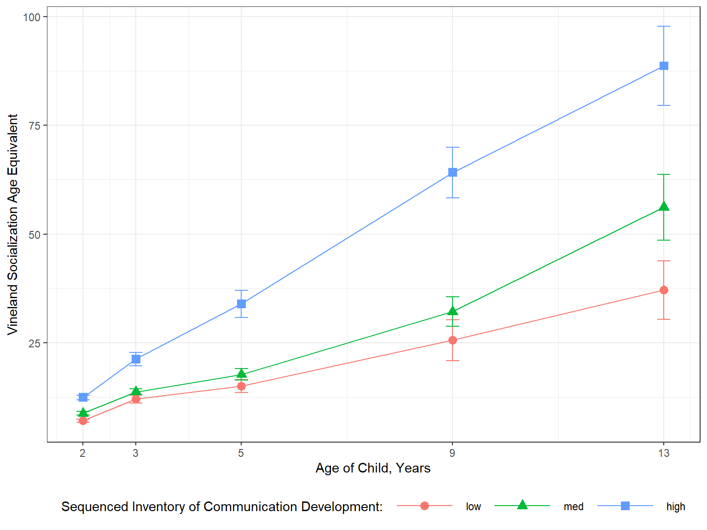
10.3 Model 1: Full model with ‘loaded’ mean structure
Take top-down approach: Quadratic regression model, describing vsae as a function of age2
Each child has a unique parabolic trajectory over time, with coefficients that vary randomly around fixed-effects defining a mean growth curve for each SICD group. Since there is no
age= 0 in our data, we will use theage2variables, which isage-2, so that intercept has meaning (mean at baseline age).
I()denotes an internal calculated variable
Fixed-effects
I(age-2)ageI((age-2)^2)quadratic age or age-squared,sicdegpSICD group (reference group = low)- SICD group x age/age-squared interactions
Random-effects
- intercept
- age and age-squared
10.3.1 Fit the Model
fit_lmer_1_re <- lmerTest::lmer(vsae ~ I(age-2)*sicdegp + I(I(age-2)^2)*sicdegp +
(I(age-2) + I((age-2)^2) | childid),
data = data_long,
REML = TRUE,
control = lmerControl(optimizer = "optimx", # get it to converge
calc.derivs = FALSE,
optCtrl = list(method = "nlminb",
starttests = FALSE,
kkt = FALSE)))10.3.2 Table of Prameter Estimates
texreg::knitreg(fit_lmer_1_re,
caption = "MLM: Full Model",
caption.above = TRUE,
single.row = TRUE)| Model 1 | |
|---|---|
| (Intercept) | 8.40 (0.75)*** |
| age - 2 | 2.28 (0.74)** |
| sicdegpmed | 1.26 (0.99) |
| sicdegphigh | 5.39 (1.11)*** |
| I(age - 2)^2 | 0.07 (0.08) |
| age - 2:sicdegpmed | 0.43 (0.98) |
| age - 2:sicdegphigh | 3.31 (1.08)** |
| sicdegpmed:I(age - 2)^2 | -0.00 (0.11) |
| sicdegphigh:I(age - 2)^2 | 0.14 (0.12) |
| AIC | 4586.50 |
| BIC | 4656.96 |
| Log Likelihood | -2277.25 |
| Num. obs. | 604 |
| Num. groups: childid | 155 |
| Var: childid (Intercept) | 1.27 |
| Var: childid I(age - 2) | 14.00 |
| Var: childid I((age - 2)^2) | 0.16 |
| Cov: childid (Intercept) I(age - 2) | -0.13 |
| Cov: childid (Intercept) I((age - 2)^2) | 0.41 |
| Cov: childid I(age - 2) I((age - 2)^2) | -0.61 |
| Var: Residual | 37.20 |
| p < 0.001; p < 0.01; p < 0.05 | |
10.3.3 Plot of the Estimated Marginal Means
Note: the \(x-axis\) is the age variable back on its original scale
interactions::interact_plot(model = fit_lmer_1_re, # model name
pred = age, # x-axis variable (must be continuous)
modx = sicdegp, # seperate lines
interval = TRUE) + # shaded bands
scale_x_continuous(breaks = c(2, 3, 5, 9, 13))Figure 10.1: Model 1: Loaded Means Structure
10.4 Model 2A: Drop Random Intercepts
Note: There seems to be relatively little variation in baseline measurements of VSAE across individuals in the same SICD group, so the variation at age 2 can be attributed to random error, rather than between-subject variation.
This indicates we may want to try removing the random intercepts, while retaining the same fixed- and other random-effects.
This new model implies that children have common initial VSAE value at age 2, given their SICD group.
10.4.1 Fit the Model
fit_lmer_2a_re <- lmerTest::lmer(vsae ~ I(age-2)*sicdegp + I((age-2)^2)*sicdegp +
(0 + I(age-2) + I((age-2)^2) | childid),
data = data_long,
REML = TRUE)10.4.2 Assess the Signifcance
anova(fit_lmer_1_re, fit_lmer_2a_re, refit = FALSE)Data: data_long
Models:
fit_lmer_2a_re: vsae ~ I(age - 2) * sicdegp + I((age - 2)^2) * sicdegp + (0 + I(age - 2) + I((age - 2)^2) | childid)
fit_lmer_1_re: vsae ~ I(age - 2) * sicdegp + I(I(age - 2)^2) * sicdegp + (I(age - 2) + I((age - 2)^2) | childid)
npar AIC BIC logLik deviance Chisq Df Pr(>Chisq)
fit_lmer_2a_re 13 4587.0 4644.2 -2280.5 4561.0
fit_lmer_1_re 16 4586.5 4657.0 -2277.2 4554.5 6.4643 3 0.09108 .
---
Signif. codes: 0 '***' 0.001 '**' 0.01 '*' 0.05 '.' 0.1 ' ' 1The more complicated model (including random intercepts) does NOT fit better, thus the random intercepts may be removed from the model. Model 2a is better than Model 1
10.5 Model 2B: Drop Random Quadratic Slope
We should formally test the necessity of quadratic age random-effect.
Comparison of nested models with REML-based LRT using a 50:50 mixture χ2-distribution with 1 and 2 df Difference of 2 covariance parameters
10.5.1 Fit the Model
fit_lmer_2b_re <- lmerTest::lmer(vsae ~ I(age-2)*sicdegp + I((age-2)^2)*sicdegp +
(0 + I(age-2) | childid),
REML = TRUE,
data = data_long)10.5.2 Assess the Signifcance
anova(fit_lmer_2a_re, fit_lmer_2b_re, refit = FALSE)Data: data_long
Models:
fit_lmer_2b_re: vsae ~ I(age - 2) * sicdegp + I((age - 2)^2) * sicdegp + (0 + I(age - 2) | childid)
fit_lmer_2a_re: vsae ~ I(age - 2) * sicdegp + I((age - 2)^2) * sicdegp + (0 + I(age - 2) + I((age - 2)^2) | childid)
npar AIC BIC logLik deviance Chisq Df Pr(>Chisq)
fit_lmer_2b_re 11 4669.3 4717.7 -2323.7 4647.3
fit_lmer_2a_re 13 4587.0 4644.2 -2280.5 4561.0 86.34 2 < 2.2e-16 ***
---
Signif. codes: 0 '***' 0.001 '**' 0.01 '*' 0.05 '.' 0.1 ' ' 1The more complicated model (including random intercepts) DOES fit better, thus the random slopes for both the linear AND the quadratic effect of age should be retained in the model. Model 2a is better than model 2b
10.6 Model 3: Drop Quadratic Time Fixed Effect
Fit the previous ‘best’ model via ML, not REML to compare nested model that differe in terms of fixed effects only
10.6.1 Fit the Models
fit_lmer_2a_ml <- lmerTest::lmer(vsae ~ I(age-2)*sicdegp + I((age-2)^2)*sicdegp +
(0 + I(age-2) + I((age-2)^2) | childid),
data = data_long,
REML = FALSE)
fit_lmer_3_ml <- lmerTest::lmer(vsae ~ I(age-2)*sicdegp +
(0 + I(age-2) + I((age-2)^2) | childid),
data = data_long,
REML = FALSE)10.6.2 Assess the Signifcance
anova(fit_lmer_2a_ml, fit_lmer_3_ml)Data: data_long
Models:
fit_lmer_3_ml: vsae ~ I(age - 2) * sicdegp + (0 + I(age - 2) + I((age - 2)^2) | childid)
fit_lmer_2a_ml: vsae ~ I(age - 2) * sicdegp + I((age - 2)^2) * sicdegp + (0 + I(age - 2) + I((age - 2)^2) | childid)
npar AIC BIC logLik deviance Chisq Df Pr(>Chisq)
fit_lmer_3_ml 10 4584.4 4628.5 -2282.2 4564.4
fit_lmer_2a_ml 13 4582.1 4639.3 -2278.0 4556.1 8.3704 3 0.03895 *
---
Signif. codes: 0 '***' 0.001 '**' 0.01 '*' 0.05 '.' 0.1 ' ' 1The more complicated model (including fixed interaction between quadratic time and SICD group) DOES fit better, thus the higher level interaction should be retained in the model. Model 2a is better than model 3.
10.7 Final Model
10.7.1 Table of Parameter Esitmates
texreg::knitreg(fit_lmer_2a_re,
caption = "MLM: Final Model",
caption.above = TRUE,
single.row = TRUE,
digits = 4)| Model 1 | |
|---|---|
| (Intercept) | 8.4085 (0.7370)*** |
| age - 2 | 2.2694 (0.7399)** |
| sicdegpmed | 1.2644 (0.9741) |
| sicdegphigh | 5.3646 (1.0907)*** |
| (age - 2)^2 | 0.0721 (0.0790) |
| age - 2:sicdegpmed | 0.4290 (0.9808) |
| age - 2:sicdegphigh | 3.3259 (1.0760)** |
| sicdegpmed:(age - 2)^2 | 0.0007 (0.1038) |
| sicdegphigh:(age - 2)^2 | 0.1335 (0.1138) |
| AIC | 4586.9689 |
| BIC | 4644.2154 |
| Log Likelihood | -2280.4845 |
| Num. obs. | 604 |
| Num. groups: childid | 155 |
| Var: childid I(age - 2) | 13.9915 |
| Var: childid I((age - 2)^2) | 0.1338 |
| Cov: childid I(age - 2) I((age - 2)^2) | -0.4436 |
| Var: Residual | 37.9869 |
| p < 0.001; p < 0.01; p < 0.05 | |
10.7.2 Interpretation of Fixed Effects
10.7.2.1 Reference Group: low SICD group
\(\gamma_{0}\) = 8.408 is the estimated marginal mean VSAE score for children in the
lowSICD, at 2 years of age\(\gamma_{a}\) = 2.269 and \(\gamma_{a^2}\) = 0.072 are the fixed effects for age and age-squared on VSAE for children in the
lowSICD group (change over time)
Thus the equation for the estimated marginal mean VASE trajectory for the low SICD group is:
\[ \begin{align*} VASE =& \gamma_{0} + \gamma_{a} (AGE - 2) + \gamma_{a^2} (AGE - 2)^2 \\ =& 8.408 + 2.269 (AGE - 2) + 0.072 (AGE - 2)^2 \\ \end{align*} \]
10.7.2.2 First Comparison Group: medium SICD group
\(\gamma_{med}\) = 1.264 is the DIFFERENCE in the estimated marginal mean VSAE score for children in the
mediumvs. thelowSICD, at 2 years of age\(\gamma_{med:\;a}\) = 0.429 and \(\gamma_{med:\;a^2}\) = 0.001 are the DIFFERENCE in the fixed effects for age and age-squared on VSAE for children in the
mediumvs. thelowSICD group
Thus the equation for the estimated marginal mean VASE trajectory for the medium SICD group is:
\[ \begin{align*} VASE =& (\gamma_{0} + \gamma_{med}) + (\gamma_{a} + \gamma_{med:\;a}) (AGE - 2) + (\gamma_{a^2} + \gamma_{med:\;a^2})(AGE - 2)^2 \\ =& (8.408 + 1.264) + (2.269 + 0.429) (AGE - 2) + (0.072 + 0.001)(AGE - 2)^2 \\ =& 9.673 + 2.698 (AGE - 2) + 0.073 (AGE - 2)^2 \\ \end{align*} \]
10.7.2.3 Second Comparison Group: high SICD group
\(\gamma_{hi}\) = 5.365 is the DIFFERENCE in the estimated marginal mean VSAE score for children in the
highvs. thelowSICD, at 2 years of age\(\gamma_{hi:\;a}\) = 3.326 and \(\gamma_{hi:\;a^2}\) = 0.133 are the DIFFERENCE in the fixed effects for age and age-squared on VSAE for children in the
highvs. thelowSICD group
Thus the equation for the estimated marginal mean VASE trajectory for the high SICD group is:
\[ \begin{align*} VASE =& (\gamma_{0} + \gamma_{hi}) + (\gamma_{a} + \gamma_{hi:\;a}) (AGE - 2) + (\gamma_{a^2} + \gamma_{hi:\;a^2})(AGE - 2)^2 \\ =& (8.408 + 5.365) + (2.269 + 3.326) (AGE - 2) + (0.072 + 0.133)(AGE - 2)^2 \\ =& 13.773 + 5.595 (AGE - 2) + 0.206 (AGE - 2)^2 \\ \end{align*} \]
10.7.3 Interpretation of Random Effects
lme4::VarCorr(fit_lmer_2a_re)%>%
print(comp = c("Variance", "Std.Dev"),
digits = 3) Groups Name Variance Std.Dev. Corr
childid I(age - 2) 13.991 3.741
I((age - 2)^2) 0.134 0.366 -0.32
Residual 37.987 6.163 Here a group of observations = a CHILD
10.7.3.1 Residual Varaince
Within-child-variance
- \(e_{ti}\) the residuals associated with observation at time \(t\) on child \(i\)
\[ \sigma^2 = \sigma^2_e = VAR[e_{ti}] = 37.987 \]
10.7.3.2 2 Variance Components
Between-children slope variances
Random LINEAR effect of age variance
- \(u_{1i}\) the DIFFERENCE between child \(i\)’s specific linear component for age and the fixed linear component for age, given their SICD group
\[ \tau_{11} = \sigma^2_{u1} = VAR[u_{1i}] = 13.99 \]
Random QUADRATIC effect of age variance
- \(u_{2i}\) the DIFFERENCE between child \(i\)’s specific quadratic component for age and the fixed quadratic component for age, given their SICD group
\[ \tau_{22} = \sigma^2_{u2} = VAR[u_{2i}] = 0.13 \]
10.7.3.3 1 Covariance (or correlation) Components
Slope-slope covariance
Random LINEAR and Quadratic effect of age covariance:
\[ \tau_{12} = \sigma^2_{u12} = COV[u_{1i}, u_{2i}] = -0.44 \] \[ Correlation(u_{1i}, u_{2i}) = -0.324 \]
10.7.4 Assumption Checking
The residuals are:
Assumed to be normally, independently, and identically distributed (conditional on other random-effects)
Assumed independent of random-effects
\[ e_{ti} \sim N(0, \sigma^2) \]
10.7.4.1 The ggResidpanel package
ggResidpanel::resid_panel(fit_lmer_2a_re) # default = pearson residuals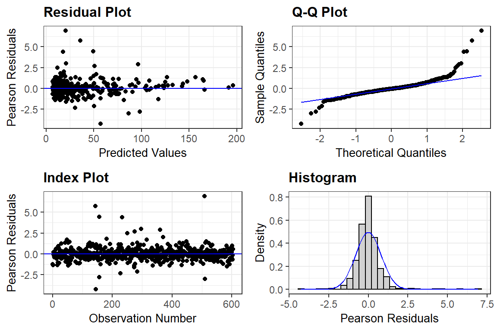
10.7.4.2 Manually with HLMdiag and ggplot2
fit_lmer_2a_re %>%
HLMdiag::hlm_augment(level = 1,
include.ls = FALSE,
standardized = TRUE) %>%
ggplot(aes(x = .resid)) +
geom_histogram(bins = 40,
color = "gray20",
alpha = .2) +
theme_bw() +
labs(main = "Histogram")
fit_lmer_2a_re %>%
ranef() %>%
data.frame() %>%
ggplot(aes(sample = condval)) +
geom_qq() +
geom_qq_line() +
facet_wrap(~ term, scale = "free_y")+
theme_bw() +
labs(main = "Random Slopes")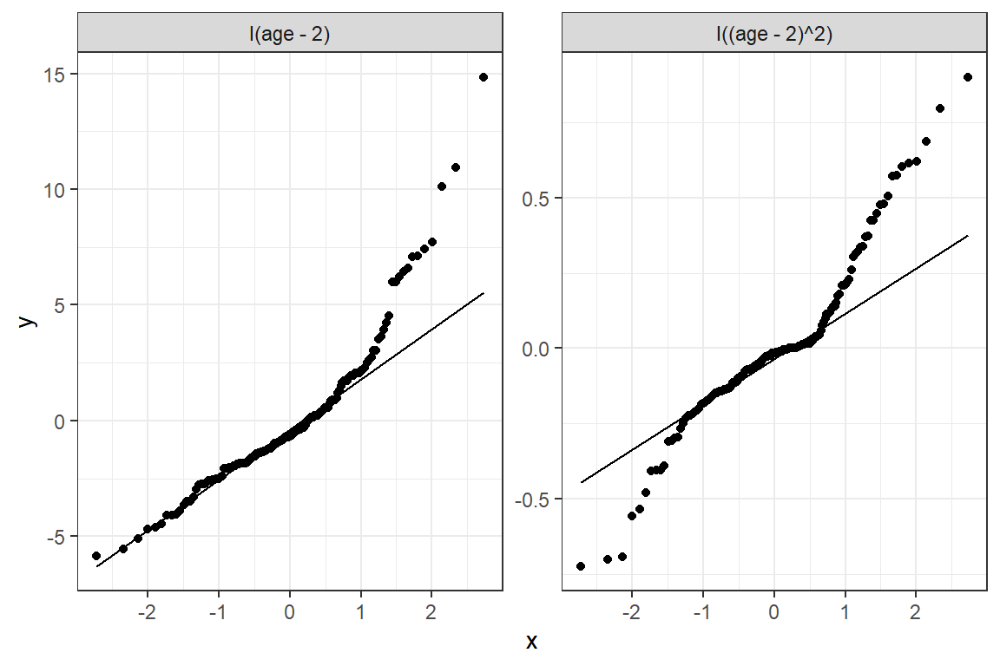
fit_lmer_2a_re %>%
HLMdiag::hlm_augment(level = 1,
include.ls = FALSE,
standardized = TRUE) %>%
ggplot(aes(x = .fitted,
y = .resid)) +
geom_hline(yintercept = 0, color = "red") +
geom_point() +
geom_smooth() +
theme_bw() +
labs(main = "Residual Plot")fit_lmer_2a_re %>%
HLMdiag::hlm_augment(level = 1,
include.ls = FALSE,
standardized = TRUE) %>%
ggplot(aes(sample = .resid)) +
geom_qq()+
stat_qq_line() +
theme_bw()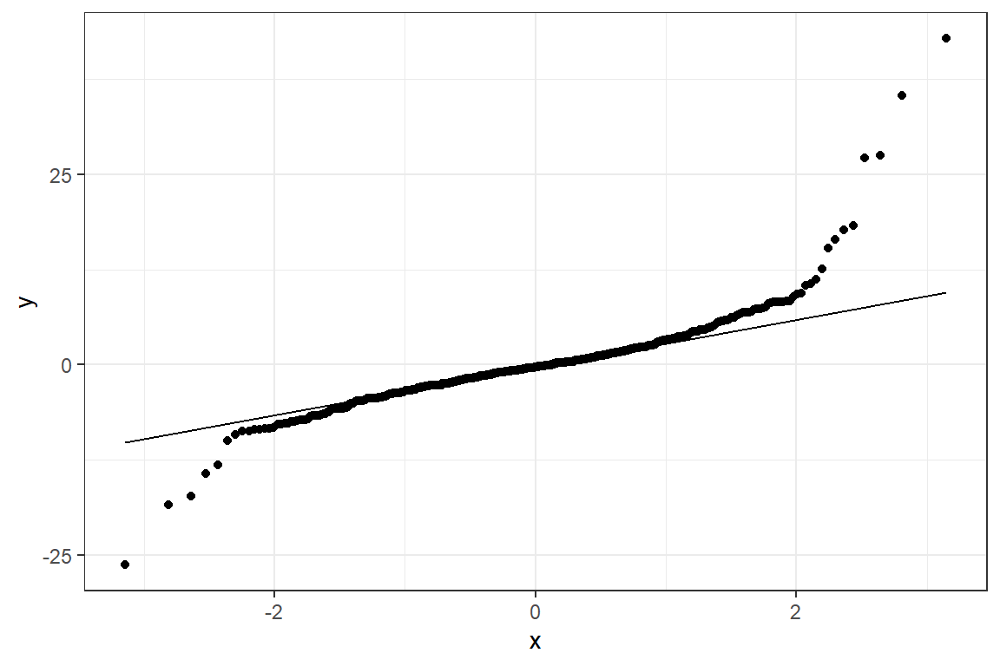
10.7.4.3 The sjPlot package
sjPlot::plot_model(fit_lmer_2a_re,
type = "diag")[[1]]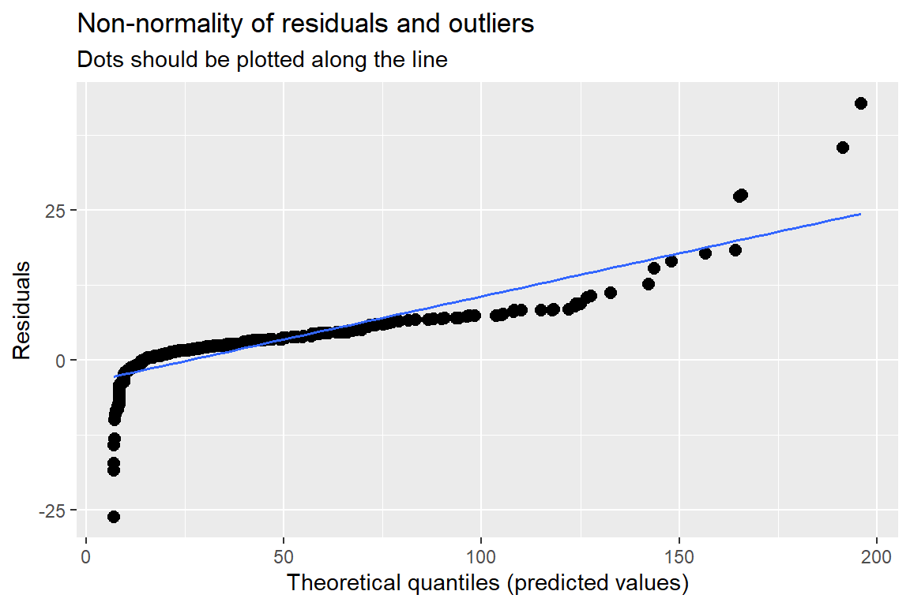
[[2]]
[[2]]$childid
[[3]]
[[4]]10.7.5 Plot of the Estimated Marginal Means
10.7.5.1 Quick and Default
Note: the \(x-axis\) is the age variable, back on its original scale
interactions::interact_plot(model = fit_lmer_2a_re, # model name
pred = age, # x-axis variable (must be continuous)
modx = sicdegp, # seperate lines
interval = TRUE) + # shaded bands
scale_x_continuous(breaks = c(2, 3, 5, 9, 13))Figure 10.2: Final Model (2a)
interactions::interact_plot(model = fit_lmer_2a_re, # model name
pred = age, # x-axis variable (must be continuous)
modx = sicdegp, # separate lines
interval = TRUE,
x.label = "Age of Child, in years",
y.label = "Estimated Marginal Mean\nVineland Socialization Age Equivalent",
legend.main = "Initial Communication (SICD)",
modx.labels = c("Low", "Medium", "High"),
colors = c("black", "black", "black")) +
scale_x_continuous(breaks = c(2, 3, 5, 9, 13)) +
scale_y_continuous(breaks = seq(from = 0, to = 120, by = 20)) +
theme_bw() +
theme(legend.position = c(0, 1),
legend.justification = c(-0.1, 1.1),
legend.background = element_rect(color = "black"),
legend.key.width = unit(2, "cm"))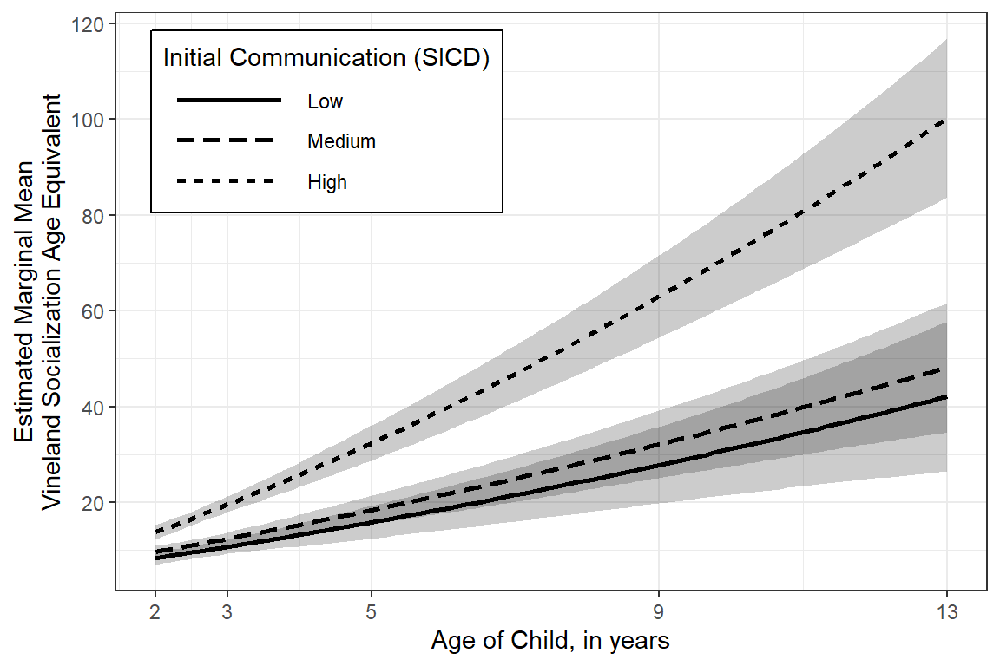
10.7.5.2 More Customized - Color
This version would look better on a poster or in a slide presentation.
effects::Effect(focal.predictors = c("age","sicdegp"), # variables involved in interactions
mod = fit_lmer_2a_re,
xlevels = list(age2 = seq(from = 2, to = 13, by = .1))) %>% # add more values to smooth out the prediction lines and ribbons
data.frame() %>%
dplyr::mutate(sicdegp = factor(sicdegp,
levels = c("high", "med", "low"),
labels = c("High", "Medium", "Low"))) %>%
ggplot(aes(x = age,
y = fit,
group = sicdegp)) +
geom_ribbon(aes(ymin = lower, # 95% Confidence Intervals
ymax = upper,
fill = sicdegp),
alpha = .3) +
geom_line(aes(linetype = sicdegp,
color = sicdegp),
size = 1) +
scale_x_continuous(breaks = c(2, 3, 5, 9, 13)) + # mark values that were actually measured
scale_y_continuous(breaks = seq(from = 0, to = 120, by = 20)) +
scale_linetype_manual(values = c("solid", "longdash", "dotted")) +
theme_bw() +
theme(legend.position = c(0, 1),
legend.justification = c(-0.1, 1.1),
legend.background = element_rect(color = "black"),
legend.key.width = unit(2.5, "cm")) +
labs(x = "Age of Child, in years",
y = "Estimated Marginal Mean\nVineland Socialization Age Equivalent",
linetype = "Initial Communication (SICD)",
fill = "Initial Communication (SICD)",
color = "Initial Communication (SICD)")
10.7.5.3 More Customized - Black and White
This version would be better for a publication.
effects::Effect(focal.predictors = c("age","sicdegp"),
mod = fit_lmer_2a_re,
xlevels = list(age2 = seq(from = 2, to = 13, by = .1))) %>%
data.frame() %>%
dplyr::mutate(sicdegp = factor(sicdegp,
levels = c("high", "med", "low"),
labels = c("High", "Medium", "Low"))) %>%
ggplot(aes(x = age,
y = fit,
group = sicdegp)) +
geom_ribbon(aes(ymin = lower,
ymax = upper,
fill = sicdegp),
alpha = .4) +
geom_line(aes(linetype = sicdegp),
size = .7) +
scale_x_continuous(breaks = c(2, 3, 5, 9, 13)) +
scale_y_continuous(breaks = seq(from = 0, to = 120, by = 20)) +
scale_linetype_manual(values = c("solid", "longdash", "dotted")) +
scale_fill_manual(values = c("gray10", "gray40", "gray60")) +
theme_bw() +
theme(legend.position = c(0, 1),
legend.justification = c(-0.1, 1.1),
legend.background = element_rect(color = "black"),
legend.key.width = unit(2, "cm")) +
labs(x = "Age of Child, in years",
y = "Estimated Marginal Mean\nVineland Socialization Age Equivalent",
linetype = "Initial Communication (SICD)",
fill = "Initial Communication (SICD)",
color = "Initial Communication (SICD)")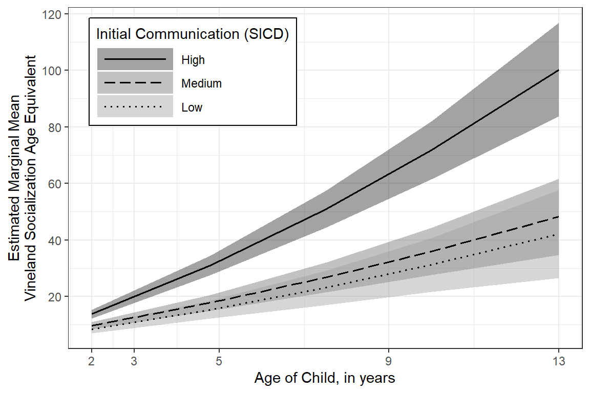
10.7.6 Post Hoc Compairisons
fit_lmer_2a_re %>%
emmeans::emmeans(pairwise ~ sicdegp,
at = list(age = 13))$emmeans
sicdegp emmean SE df lower.CL upper.CL
low 42.1 7.97 135 26.3 57.9
med 48.2 6.90 131 34.5 61.8
high 100.2 8.45 131 83.5 116.9
Degrees-of-freedom method: kenward-roger
Confidence level used: 0.95
$contrasts
contrast estimate SE df t.ratio p.value
low - med -6.07 10.5 133 -0.575 0.8335
low - high -58.10 11.6 133 -5.002 <.0001
med - high -52.03 10.9 131 -4.772 <.0001
Degrees-of-freedom method: kenward-roger
P value adjustment: tukey method for comparing a family of 3 estimates totalSD <- VarCorr(fit_lmer_2a_re) %>%
data.frame() %>%
dplyr::summarise(tot_var = sum(vcov)) %>%
dplyr::pull(tot_var) %>%
sqrt()
totalSD[1] 7.188084fit_lmer_2a_re %>%
emmeans::emmeans(~ sicdegp,
at = list(age = 13)) %>%
emmeans::eff_size(sigma = totalSD, # which SD to divide by???
edf = 50) # df contrast effect.size SE df lower.CL upper.CL
low - med -0.844 1.47 131 -3.75 2.06
low - high -8.083 1.81 131 -11.66 -4.51
med - high -7.239 1.68 131 -10.56 -3.91
sigma used for effect sizes: 7.188
Degrees-of-freedom method: inherited from kenward-roger when re-gridding
Confidence level used: 0.95 10.7.7 Blups vs. Fixed Effects
BLUP = Best Linear Unbiased Predictor
A BLUP is the specific prediction for an individual supject, showin by black lines below. This includes the fixed effects as well as the specific random effects for a given individual.
Comparatively, the blue lines below display the predictions for fixed effects only.
data_long %>%
dplyr::mutate(sicdegp = fct_recode(sicdegp,
"Low Communication" = "low",
"Medium Communication" = "med",
"High Communication" = "high")) %>%
dplyr::mutate(pred_fixed = predict(fit_lmer_2a_re, re.form = NA)) %>% # fixed effects only
dplyr::mutate(pred_wrand = predict(fit_lmer_2a_re)) %>% # fixed and random effects together
ggplot(aes(x = age,
y = vsae)) +
geom_line(aes(y = pred_wrand, # BLUP = fixed and random effects together
group = childid,
color = "BLUP",
size = "BLUP")) +
geom_line(aes(y = pred_fixed, # fixed effects only
group = sicdegp,
color = "Fixed",
size = "Fixed")) +
scale_color_manual(name = "Model: ",
values = c("BLUP" = "black",
"Fixed" = "blue")) +
scale_size_manual(name = "Model: ",
values = c("BLUP" = .5,
"Fixed" = 1.5)) +
facet_grid(. ~ sicdegp) +
theme_bw() +
scale_x_continuous(breaks = c(2, 3, 5, 9, 13)) +
labs(x = "Age, in years",
y = "Estimated Marginal Mean\nVineland Socialization Age Equivalent") +
theme(legend.position = "bottom",
legend.key.width = unit(1.5, "cm"))
data_long %>%
dplyr::mutate(pred_fixed = predict(fit_lmer_2a_re, re.form = NA)) %>%
dplyr::mutate(pred_wrand = predict(fit_lmer_2a_re)) %>%
dplyr::filter(childid %in% sample(levels(data_long$childid), 25)) %>% # 25 randomly sampled children
ggplot(aes(x = age,
y = vsae)) +
geom_point(aes(color = sicdegp),
size = 3) +
geom_line(aes(y = pred_wrand,
linetype = "BLUP",
size = "BLUP"),
color = "black") +
geom_line(aes(y = pred_fixed,
color = sicdegp,
linetype = "Fixed",
size = "Fixed")) +
scale_linetype_manual(name = "Model: ",
values = c("BLUP" = "longdash",
"Fixed" = "solid")) +
scale_size_manual(name = "Model: ",
values = c("BLUP" = .5,
"Fixed" = 1)) +
facet_wrap(. ~ childid, labeller = "label_both") +
theme_bw() +
scale_x_continuous(breaks = c(2, 3, 5, 9, 13)) +
theme(legend.position = "bottom",
legend.key.width = unit(1.5, "cm")) +
labs(x = "Age, in years",
y = "Estimated Marginal Mean\nVineland Socialization Age Equivalent",
color = "Communication:")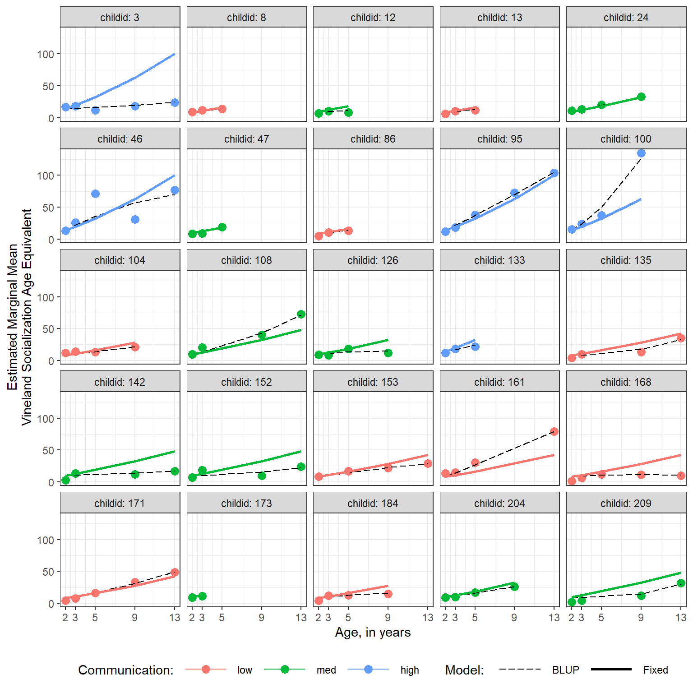